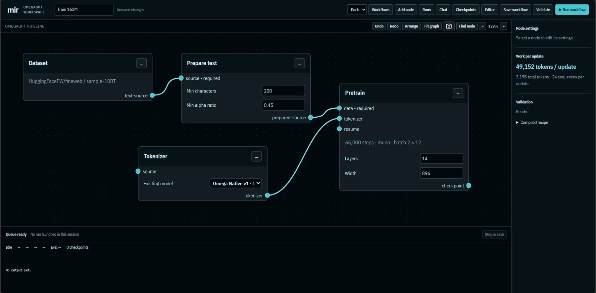
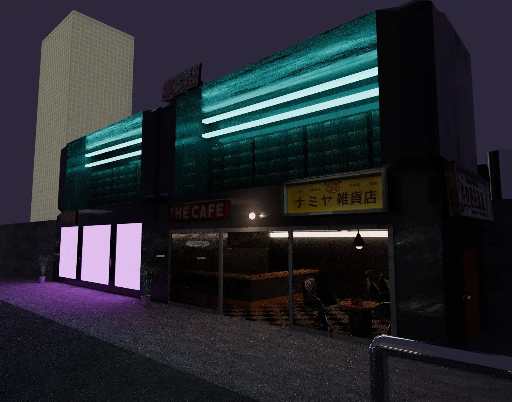
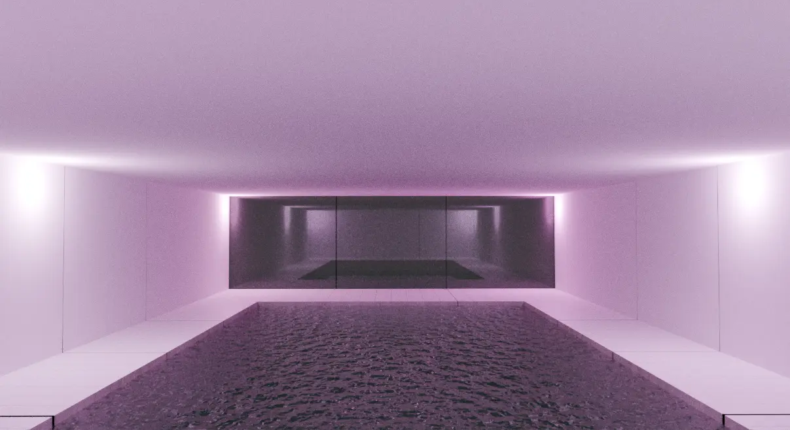
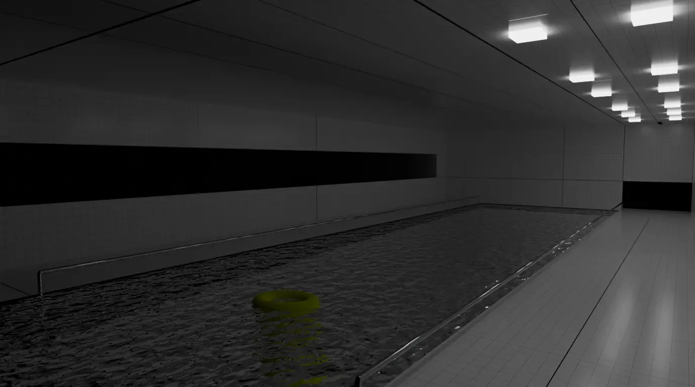
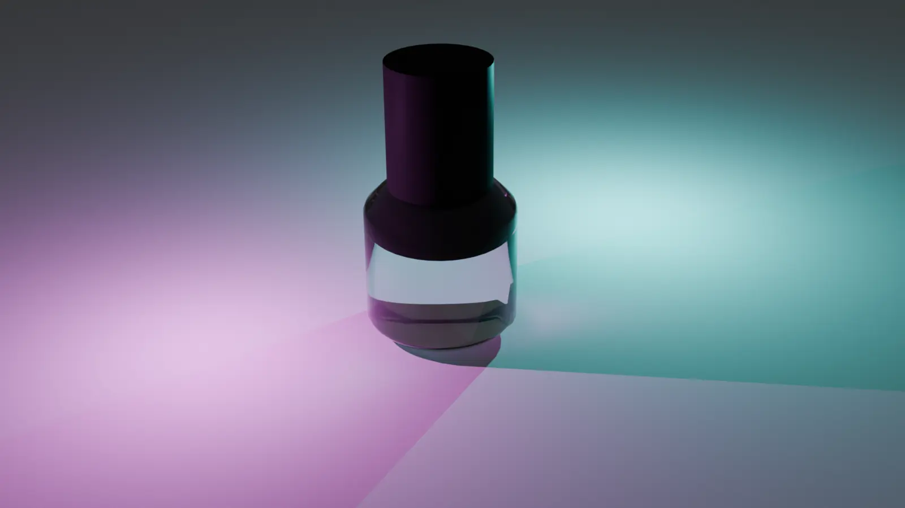
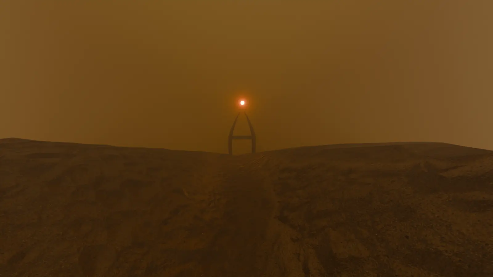
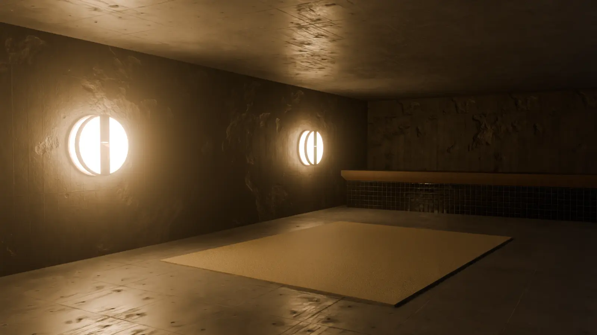
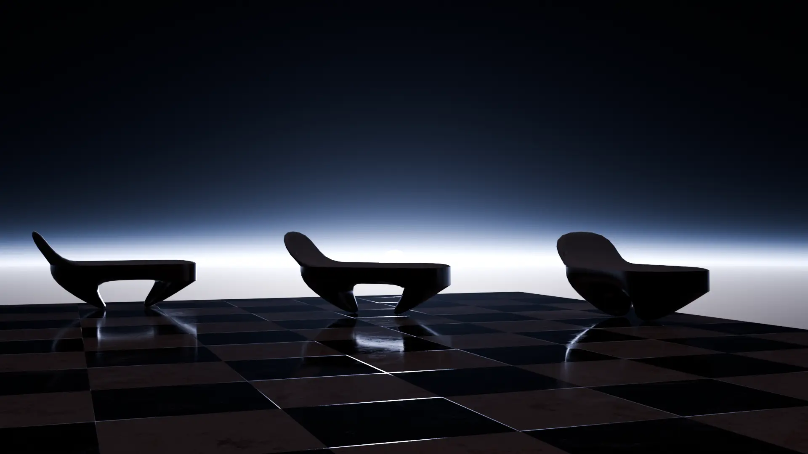
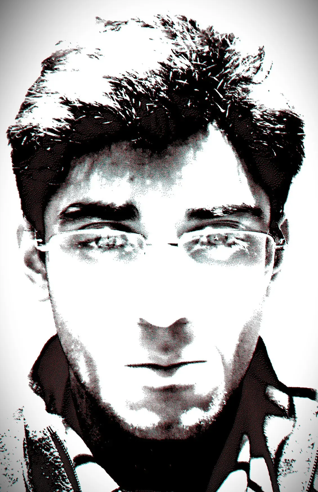

2026
TinyGPT → OmegaGPT
The early terminal-based training engines. This is where I learned pretraining, evaluation, checkpoints, fine-tuning, and how easily a long run can go wrong.
The first model had about 29 million parameters.
AI hobbyist and digital artist
Riyadh, Saudi Arabia
Most of it happens at home, on one computer. I train small language models, build the software around them, and make other things when I need a break.

01
A continuing set of experiments in training language models on consumer hardware.
2026
The early terminal-based training engines. This is where I learned pretraining, evaluation, checkpoints, fine-tuning, and how easily a long run can go wrong.
The first model had about 29 million parameters.
2026
A visual, node-based workspace for preparing data, training a model, evaluating checkpoints, fine-tuning, and exporting the result.
Built and tested at home. Largest run: 145M parameters and roughly 65,000 steps on a 16 GB GPU.
Now
The current rewrite of the training engine: cleaner internals, fewer wasteful operations, and compatibility with the checkpoints I already trained.
In development.
Next
A planned tool for guided local fine-tuning. The idea is to make adapting a model useful to someone who has data and a problem, not an ML background.
Specification written; not built yet.
02
Selected Blender scenes from 2024–2026.







03
I’ve released some music, but I’m too shy and insecure about it to share much yet. Here are a few of the covers.

04
Hello, my name is Ried and that's me in the picture (sorry if it seems like I'm staring right through your soul). I'm an AI hobbyist and "digital artist" based in Riyadh. I've been using tools related to Ai since early diffusion models became a thing, while also using the first open sparse MOE Mistral model (Mixtral 8x7B, not really the first but it was capable compared to whatever SMOE were before). Now days I work on my own projects and occasionally make stuff in Blender, Krita (very rarely), FL Studio, and other tools, I'm learning as I continue.
{kind=link}
{kind=link}
{kind=link}
{kind=link}
{kind=link}
{kind=link}
{kind=link}
{kind=link}
{kind=link}
{kind=link}